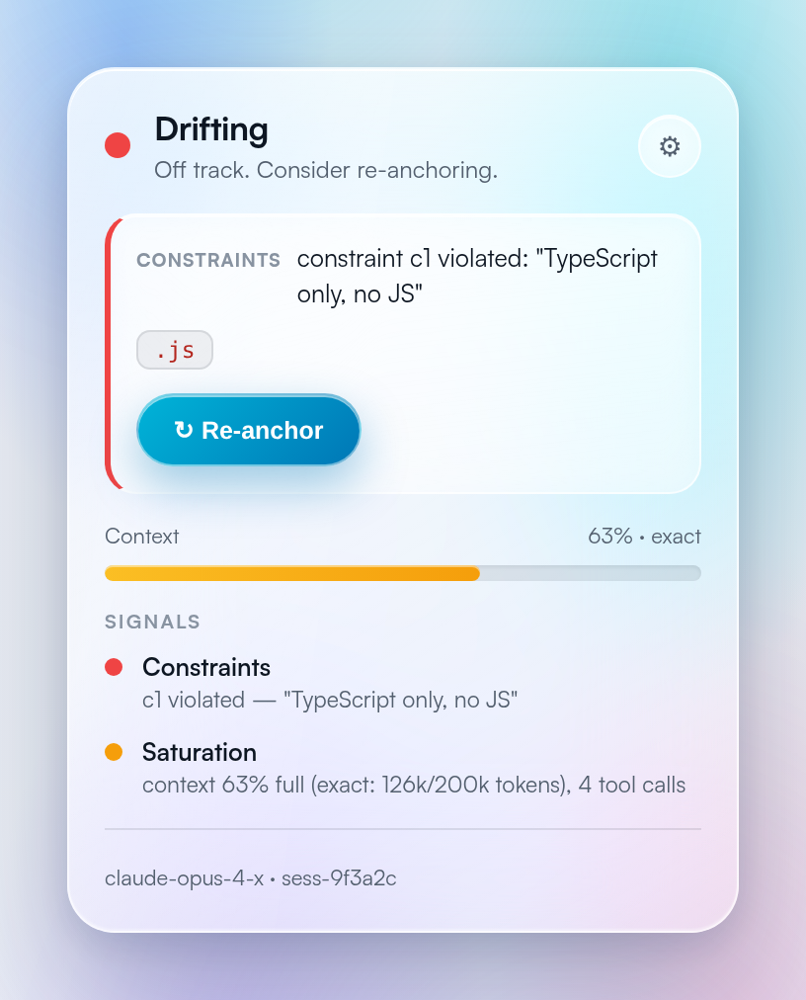
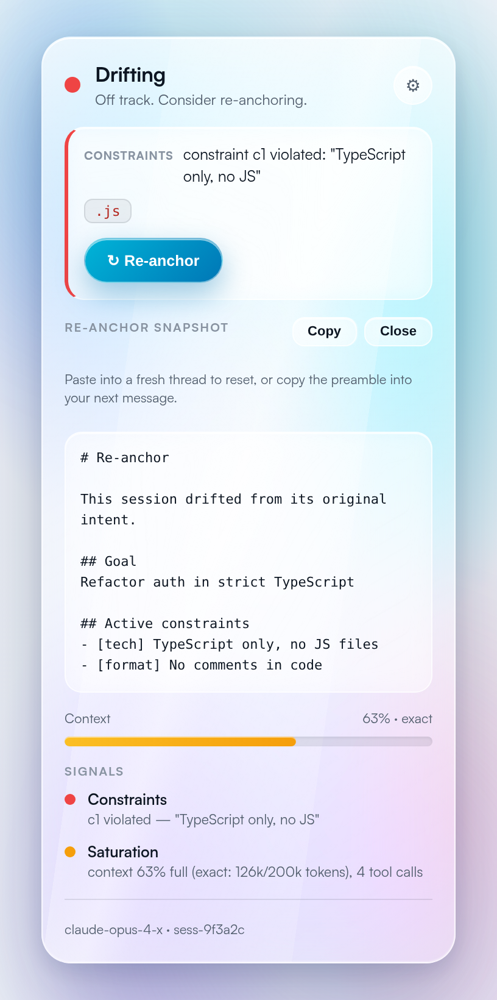
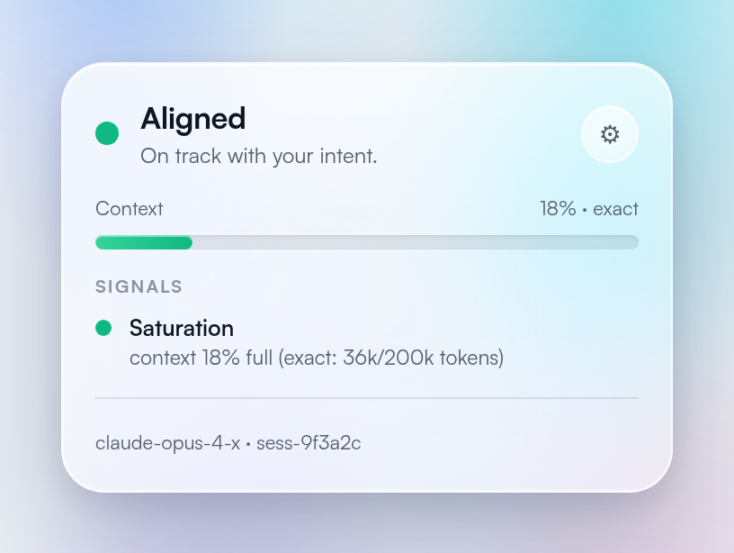

Your model didn't change.
Your conversation did.
Drifterr watches your AI chat for drift from what you actually asked — your goal and constraints — and warns you before you lose an hour, with one-click re-anchoring.
macOS · Windows · Linux — free

Three steps
Point your tool at Drifterr
Set your base URL to the local proxy, or just let it watch your Claude Code sessions and browser chats. Streaming passes through byte-for-byte.
It measures the drift
Five separate signals — constraints, saturation, goal, decisions, degradation — each with named evidence. No opaque score.
Re-anchor in one click
When it goes red, get a paste-ready reset snapshot — or let the proxy re-inject your constraints automatically.
What it catches
Constraint breaks
Deterministic rules flag the exact violation and the offending span — 0 false positives.
Context saturation
Exact occupancy via the proxy. The leading indicator, before the output degrades.
Goal drift
Tracks how far recent replies wander from your stated goal, locally.
Reintroduced decisions
Catches the model re-proposing something you already rejected.
Degradation
Looping, ballooning, hedging — the tells of a rotting context.
Standing orders
The rules you repeat become permanent and reappear in every new session.
Name the cause, not a number.
Every signal carries its own state and evidence, so the panel tells you why — a violated constraint, a filling window — and hands you the fix.


Catch the drift before the wall.
DownloadFree · local-first · open source